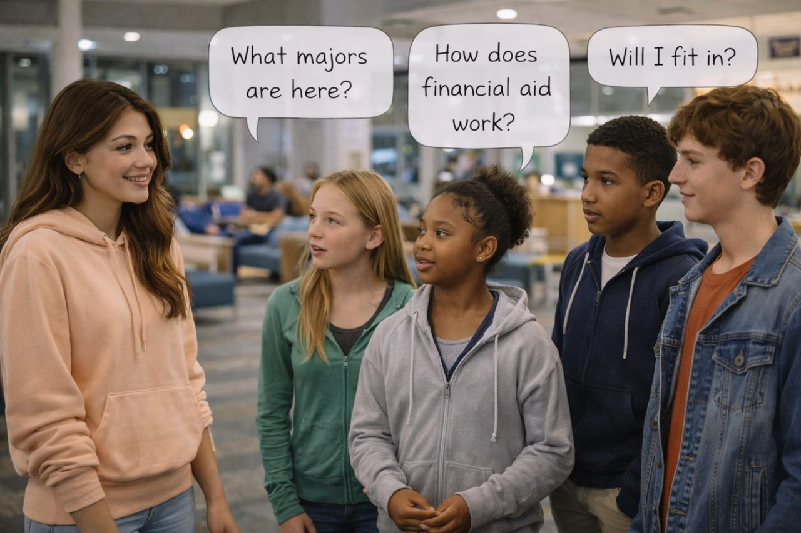

Maya's story
The same thinker in different contexts
At a campus youth night, Maya hears high-school students describe homework after athletics, evening jobs, sibling care, and finally feeling alert around midnight.
During a calm planning activity, the teens compare college options thoughtfully. Later, fatigue, excitement, and strong peer reactions make the conversation more impulsive and distracted.
Maya remembers being told that teenagers simply make poor choices. The evening suggests a better question: what happens when developing abilities meet sleep loss, emotion, reward, peers, and opportunity?
Reading lens: Predict how a change in context—not a change in intelligence—might change behavior.